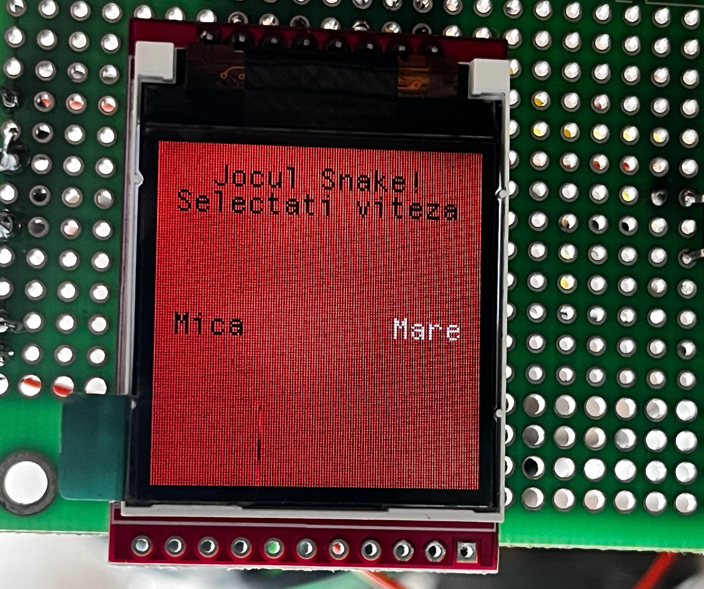
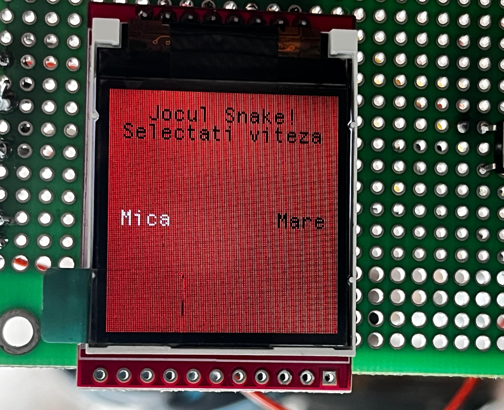
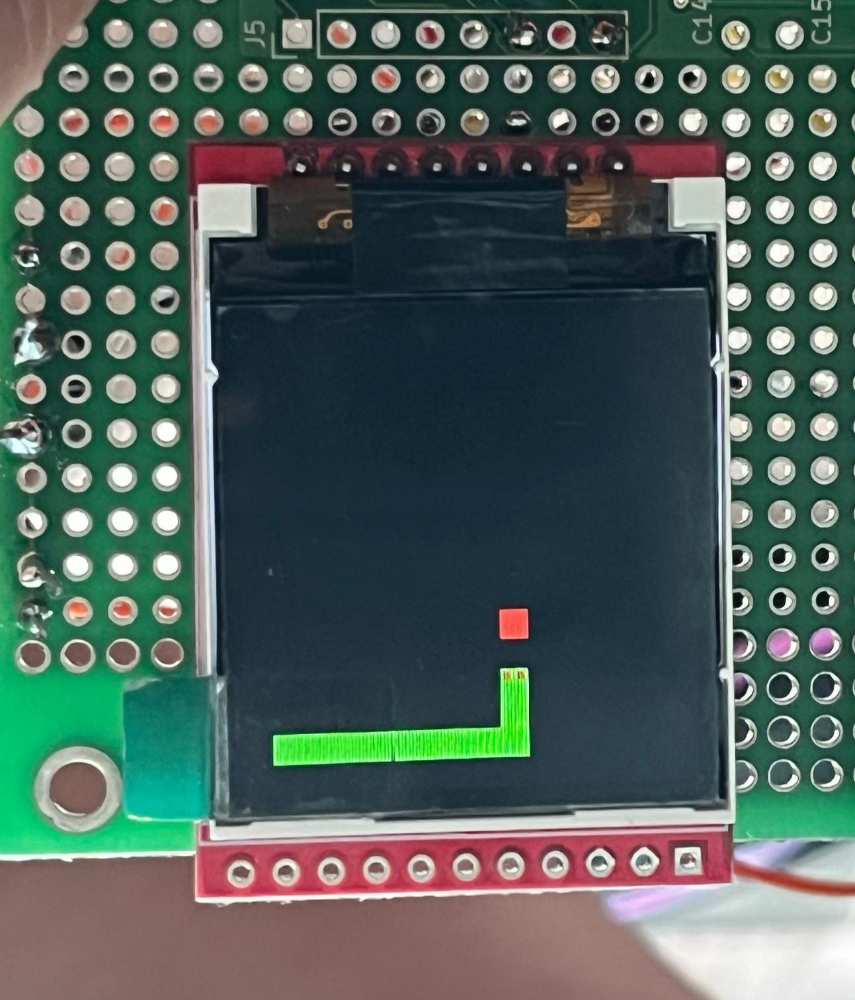
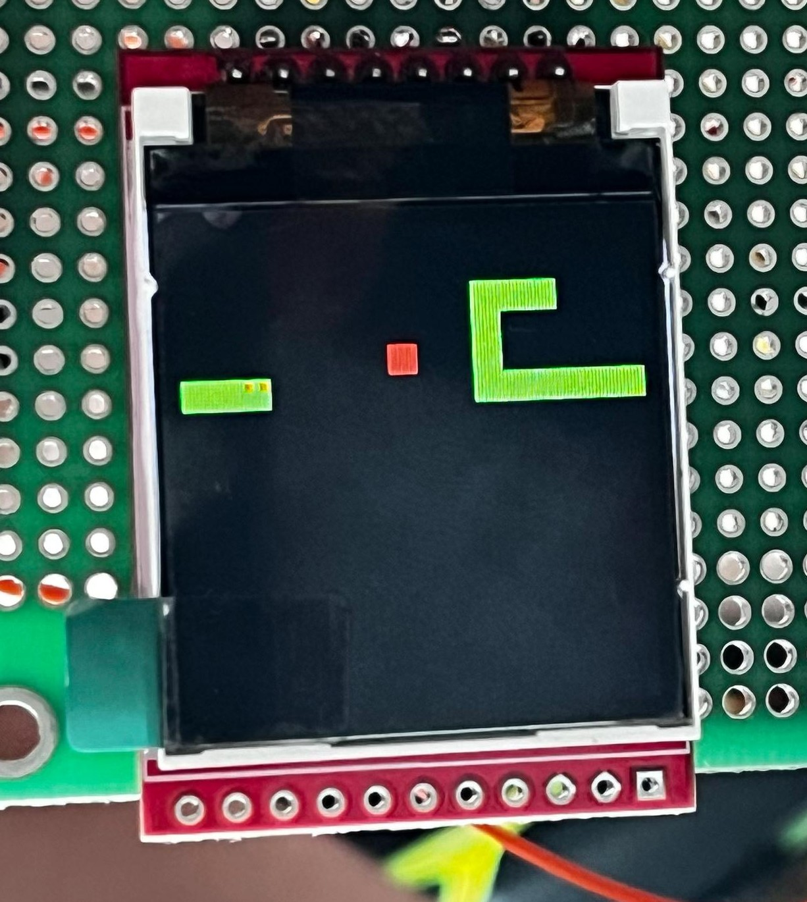
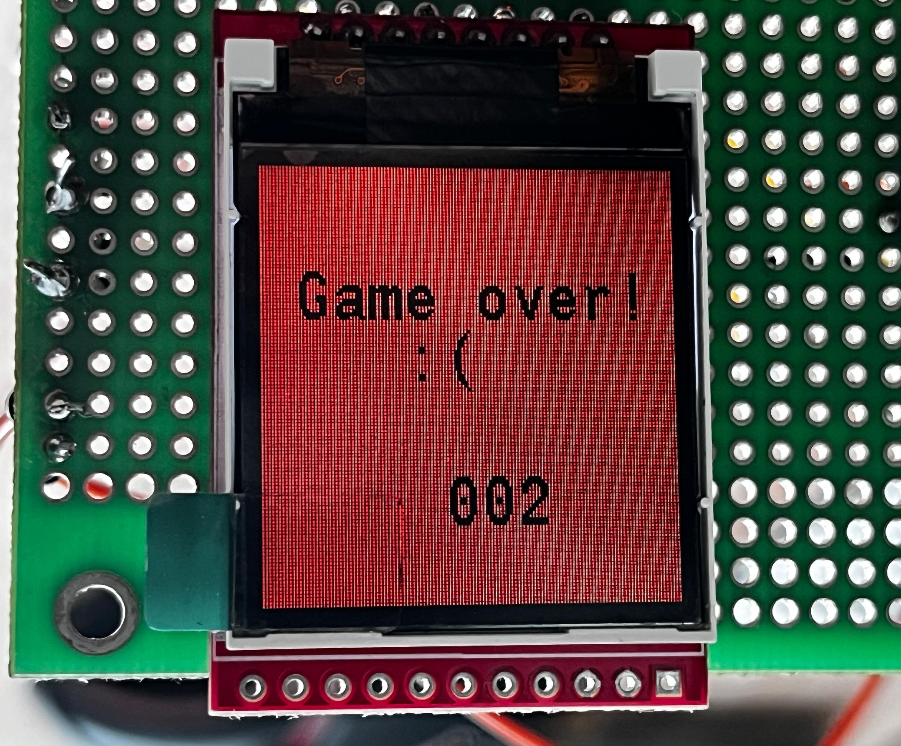

În momentul inițial, am dorit crearea unui joc SNAKE clasic: un șarpe se deplasează pe ecran, încercând să devină cât mai mare prin preluarea hranei, totul controlat de utilizator prin intermediul butoanelor. Jocul avea să se încheie prin coliziunea cu pereții sau cu el însuși și ar fi avut un singur mod de joc, cel prestabilit.
Rezultatul final prezintă un joc mult mai complex decât s-a propus inițial, deoarece am dorit să îl facem cât mai interactiv și atractiv pentru utilizatori. Am creat o interfață inițială interactivă prin care utilizatorul își poate alege nivelul de dificultate (reprezentat de viteza de deplasare a șarpelui).


Ulterior, am modificat strategia de câștig prin posibilitatea de trecere a șarpelui prin marginile ecranului și afișându-se din partea opusă a acestuia.


Am dorit să dezvoltăm și partea estetică a jocului, astfel că am creat elemente cât mai colorate și dinamice; am creat și o interfață de sfârșit de joc (animație dinamică) prin care utilizatorul este anunțat de scorul obținut.

Pe parcursul dezvoltării software și hardware, am întâmpinat diverse probleme precum:
În ceea ce privește optimizarea, am adăugat întreruperi externe pentru inputuri, asigurându-ne că pull-down-ul este respectat și că întreruperile sunt verificate pe rising edge. De asemenea, am stilizat jocul prin adăugarea de ochi pentru șarpe, făcându-l mai atractiv. Am folosit culori vii în designul jocului pentru a îmbunătăți experiența vizuală a utilizatorilor. In plus sarpele poate sa si treaca prin pereti, sporind nivelul de complexitate al jocului si dezvoltarii software.